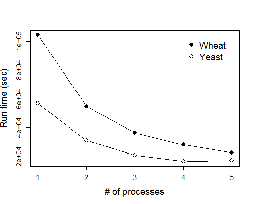
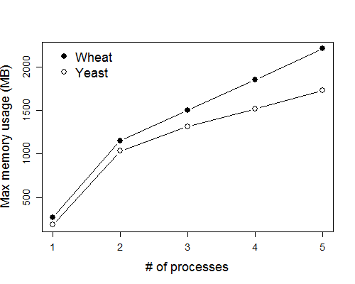
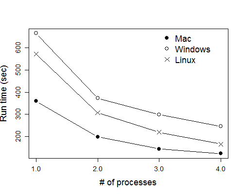
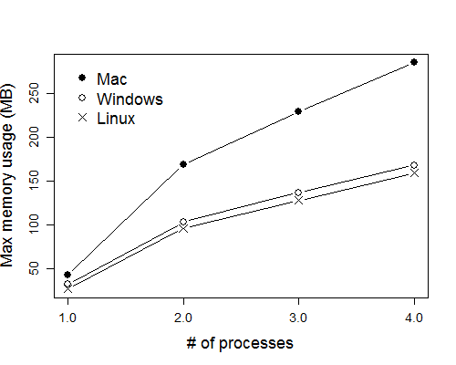

Program performance
This page details the run time and memory usage of GRAMPA on several datasets. This might help you decide how to allocate resources for your dataset.
Comparisons between real datasets
These datasets were run on the Mason computing cluster at Indiana University.


Comparisons between operating systems
| Dataset | # Taxa | # Gene trees | # MUL-trees considered |
|---|---|---|---|
| Simulation 3a | 7 | 1,000 | 128 |
| OS | Processor | Memory (GB) |
|---|---|---|
| Mac OS X Yosemite (10.10.3) | Intel Core i7 @ 3.1 GHz | 16 |
| Windows 7 Ultimate (64 bit) | Intel Core i5-750 @ 2.67 GHz | 12 |
| Red Hat Enterprise Linux 6.x (login node on Mason) | Two Intel Xeon E5-2600 | 24 |

